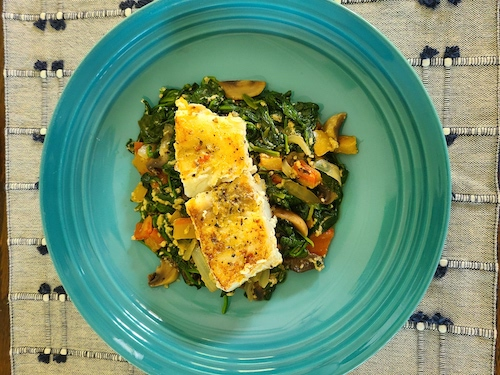

Fish Florentine

Fish Florentine
This easy recipe is made with pan seared white fish on a creamy bed of spinach and parmesan for a light meal packed full of flavor.
4 servings
Ingredients
- 4 5oz thick pieces of skinless firm white fish (cod, grouper, halibut)
- 1 tablespoon extra-virgin olive oil
- 1 tablespoon salted butter
- 1 cup red bell pepper, chopped
- 2 cloves of garlic, minced
- 9 oz fresh baby spinach (2 bags)
- 2 oz Reduced fat cream cheese
- 1/4 cup half and half cream
- 3 tablespoons grated parmesan cheese
- Kosher salt and black pepper to taste
Steps
- In a large skillet over medium heat add 1/2 tablespoon of olive oil and 1/2 tablespoon of butter, red bell pepper and garlic and cook for about 4 minutes.
- Add spinach season with a pinch of salt and pepper mix until the spinach wilts down.
- Add cream cheese, half & half and parmesan cheese mix well until cream cheese is melted and resembles creamed spinach.
- Heat a separate skillet on medium high heat, add remaining oil and butter.
- Season fish on both sides with salt and pepper and place on the hot pan.
- Cook 6 minutes on first side and flip fish over and cook other side an additional 5 minutes, until cooked through and browned.
- Divide the spinach mixture on the bottom of each plate and top with piece of fish